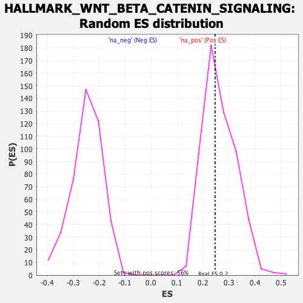

| | | Dataset | CK_basal |
| Phenotype | NoPhenotypeAvailable |
| Upregulated in class | na_pos |
| GeneSet | HALLMARK_WNT_BETA_CATENIN_SIGNALING |
| Enrichment Score (ES) | 0.24632809 |
| Normalized Enrichment Score (NES) | 0.9345518 |
| Nominal p-value | 0.5531915 |
| FDR q-value | 0.65521026 |
| FWER p-Value | 1.0 |
Table: GSEA Results Summary
Fig 1: Enrichment plot: HALLMARK_WNT_BETA_CATENIN_SIGNALING
Profile of the Running ES Score & Positions of GeneSet Members on the Rank Ordered List
| SYMBOL | RANK IN GENE LIST | RANK METRIC SCORE | RUNNING ES | CORE ENRICHMENT | | 1 | DKK1 | 64 | 3.156 | 0.0847 | Yes |
| 2 | HDAC2 | 660 | 2.236 | 0.1164 | Yes |
| 3 | CUL1 | 2521 | 1.499 | 0.0628 | Yes |
| 4 | MYC | 2938 | 1.396 | 0.0803 | Yes |
| 5 | PSEN2 | 3112 | 1.354 | 0.1092 | Yes |
| 6 | SKP2 | 3145 | 1.348 | 0.1451 | Yes |
| 7 | TCF7 | 3613 | 1.247 | 0.1559 | Yes |
| 8 | HEY1 | 3787 | 1.207 | 0.1806 | Yes |
| 9 | AXIN1 | 4044 | 1.162 | 0.1999 | Yes |
| 10 | DLL1 | 4263 | 1.115 | 0.2198 | Yes |
| 11 | ADAM17 | 4554 | 1.057 | 0.2343 | Yes |
| 12 | WNT1 | 5128 | 0.945 | 0.2312 | Yes |
| 13 | TP53 | 5424 | 0.894 | 0.2410 | Yes |
| 14 | NOTCH1 | 5774 | 0.834 | 0.2463 | Yes |
| 15 | CTNNB1 | 7329 | 0.564 | 0.1823 | No |
| 16 | FRAT1 | 7723 | 0.498 | 0.1760 | No |
| 17 | NCOR2 | 7850 | 0.476 | 0.1828 | No |
| 18 | WNT6 | 7863 | 0.475 | 0.1954 | No |
| 19 | HDAC11 | 8272 | 0.408 | 0.1859 | No |
| 20 | NOTCH4 | 9699 | 0.168 | 0.1173 | No |
| 21 | JAG1 | 9861 | 0.138 | 0.1129 | No |
| 22 | FZD8 | 9976 | 0.121 | 0.1104 | No |
| 23 | DKK4 | 10233 | 0.077 | 0.0994 | No |
| 24 | CCND2 | 10983 | -0.054 | 0.0625 | No |
| 25 | LEF1 | 11555 | -0.154 | 0.0375 | No |
| 26 | NKD1 | 11861 | -0.205 | 0.0275 | No |
| 27 | PPARD | 12130 | -0.250 | 0.0208 | No |
| 28 | CSNK1E | 12725 | -0.362 | 0.0004 | No |
| 29 | JAG2 | 12837 | -0.387 | 0.0054 | No |
| 30 | PTCH1 | 13674 | -0.549 | -0.0222 | No |
| 31 | WNT5B | 13780 | -0.571 | -0.0117 | No |
| 32 | HEY2 | 14594 | -0.729 | -0.0331 | No |
| 33 | KAT2A | 14947 | -0.798 | -0.0289 | No |
| 34 | HDAC5 | 14978 | -0.802 | -0.0081 | No |
| 35 | GNAI1 | 15073 | -0.823 | 0.0100 | No |
| 36 | DVL2 | 15593 | -0.952 | 0.0099 | No |
| 37 | AXIN2 | 15696 | -0.977 | 0.0319 | No |
| 38 | FZD1 | 15753 | -0.992 | 0.0567 | No |
| 39 | RBPJ | 16115 | -1.075 | 0.0681 | No |
| 40 | NUMB | 16726 | -1.231 | 0.0711 | No |
| 41 | NCSTN | 16738 | -1.236 | 0.1050 | No |
| 42 | MAML1 | 17185 | -1.363 | 0.1201 | No |
Table: GSEA details [plain text format]

Fig 2: HALLMARK_WNT_BETA_CATENIN_SIGNALING: Random ES distribution
Gene set null distribution of ES for HALLMARK_WNT_BETA_CATENIN_SIGNALING